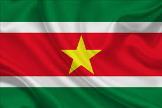

A história do Suriname começou com a chegada dos índios arauaques, tupis e caraíbas no século XVI. Mais tarde, o país foi conquistado pelos espanhóis e, em meados do século XVII, os ingleses estabeleceram-se lá. Em 1667, o Tratado de Breda, que marcou o fim da Segunda Guerra Anglo-Holandesa, fez com que o território passasse para as mãos dos holandeses. O país era então conhecido como Guiana Holandesa, mas, após conquistar a independência em 1975, passou a adotar o nome de Suriname.
O Suriname também é um dos países que tem como esporte favorito o futebol. Formada em 1929, embora seja um país da América do Sul, o Suriname é membro da Confederação de Futebol da América do Norte, Central e Caribe.
A cozinha crioula é uma mistura da culinária africana com a europeia. Os pratos da cozinha crioula são deliciosos e refinados. Os sabores doce e salgado são alternados; frutas ou açúcar nas refeições são, portanto, incomuns. Às vezes, pimenta vermelha é servida separadamente. O segredo da culinária crioula está no tempero dos alimentos.
A língua oficial da Guiana é o inglês, o que faz dela o único país da região a ter o inglês como língua oficial. Mesmo assim, o país reconhece dez línguas faladas regionalmente, como Akawaio, Macushi, Patamona e Wapishana.
Holandês (oficial) Sranan Tongo, Sranami (hindi), javanês, chinês, línguas tribais.
O Suriname é um país cultural e religiosamente diverso, com várias religiões praticadas pela sua população. As religiões mais praticadas são o hinduísmo (27%), o islamismo (20%), o catolicismo (22%) e o protestantismo (25%). Outras religiões praticadas incluem o espiritismo (3,5%), novas religiões (4,9%), e religiões sem religião e ateísmo (4,9%).